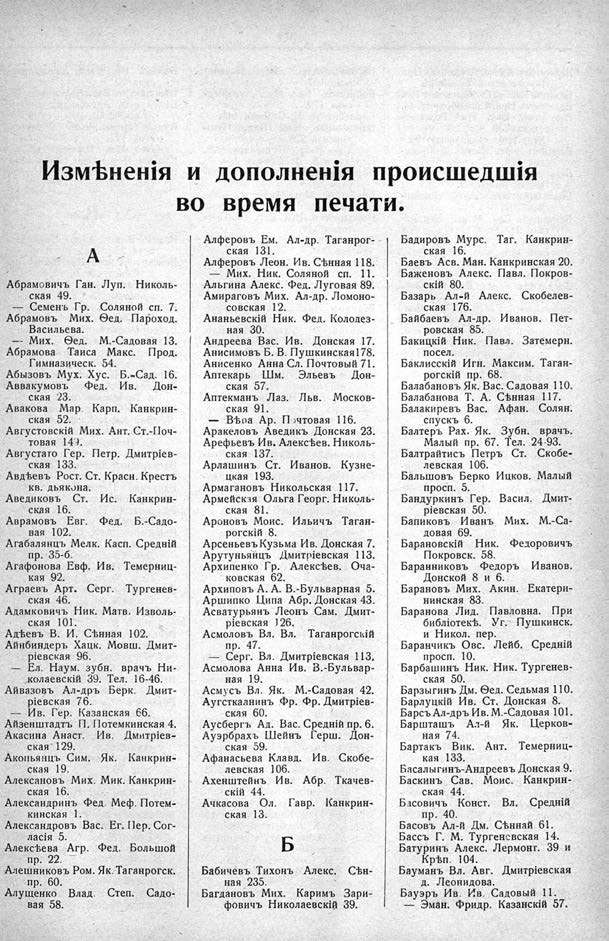

Лист источника 345
Скан

Распознанный текст
Измѣненія и дополненія происшедшія
во время печати.
А
Абрамовичъ Ган. Луп. Николь-
ская 49.
— Семенъ Гр. Соляной сп. 7.
Абрамовъ Мих. Ѳед. Пароход.
Васильева.
— Мих. Ѳед. М.-Садовая 13.
Абрамова Таиса Макс. Прод.
Гимназическ. 54.
Абызовъ Мух. Хус. Б.-Сад. 16.
Аввакумовъ Фед. Ив. Дон-
ская 23.
Авакова Мар. Карп. Канкрин-
ская 52.
Августовскій Мих. Ант. Ст.-Поч-
товая 149.
Августато Гер. Петр. Дмитріев-
ская 133.
Авдѣевъ Рост. Ст. Красн. Крестъ
кв. дьякона.
Аведиковъ Ст. Ис. Канкрин-
ская 16.
Аврамовъ Евг. Фед. Б.-Садо-
вая 102.
Агабалянцъ Мелк. Касп. Средній
пр. 35-б.
Агафонова Евф. Ив. Темерниц-
кая 92.
Аграевъ Арт. Серг. Тургенев-
ская 46.
Адамковичъ Ник. Матв. Изволь-
ская 101.
Адѣевъ В. И. Сѣнная 102.
Айнбиндеръ Хацк. Мовш. Дмит-
ріевская 96.
— Ел. Наум. зубн. врачъ Ни-
колаевскій 39. Тел. 16-46.
Айвазовъ Ал-дръ Берк. Дмит-
ріевская 76.
— Ив. Гер. Казанская 66.
Айзенштадтъ П. Потемкинская 4.
Акасина Анаст. Ив. Дмитріев-
ская 129.
Акопьянцъ Сим. Як. Канкрин-
ская 19.
Алексановъ Мих. Мик. Канкрин-
ская 16.
Александринъ Фед. Меф. Потем-
кинская 1.
Александровъ Вас. Ег. Пер. Сог-
ласія 5.
Алексѣева Агр. Фед. Большой
пр. 22.
Алешниковъ Ром. Як. Таганрогск.
пр. 60.
Алущенко Влад. Степ. Садо-
вая 58.
Алферовъ Ем. Ал-др. Таганрог-
ская 131.
Алферовъ Леон. Ив. Сѣнная 118.
— Мих. Ник. Соляной сп. 11.
Альгина Алекс. Фед. Луговая 89.
Амираговъ Мих. Ал-др. Ломоно-
совская 12.
Ананьевскій Ник. Фед. Колодез-
ная 30.
Андреева Вас. Ив. Донская 17.
Анисимовъ Б. В. Пушкинская 178.
Анисенко Анна Сл. Почтовый 71.
Аптекарь Шм. Эльевъ Дон-
ская 57.
Аптекманъ Лаз. Льв. Москов-
ская 91.
— Вѣѳа Ар. Почтовая 116.
Аракеловъ Аведикъ Донская 23.
Арефьевъ Ив. Алексѣев. Николь-
ская 137.
Арлашинъ Ст. Иванов. Кузне-
цкая 193.
Армагановъ Никольская 117.
Армейская Ольга Георг. Николь-
ская 81.
Ароновъ Моис. Ильичъ Таган-
рогскій 8.
Арсеньевъ Кузьма Ив. Донская 7.
Арутуньянцъ Дмитріевская 113.
Архипенко Гр. Алексѣев. Оча-
ковская 62.
Архиповъ А. А. В.-Бульварная 5.
Аршипко Ципа Абр. Донская 43.
Асватурьянъ Леонъ Сам. Дмит-
ріевская 126.
Асмоловъ Вл. Вл. Таганрогскій
пр. 47.
— Серг. Вл. Дмитріевская 113.
Асмолова Анна Ив. В.-Бульвар-
ная 19.
Асмусъ Вл. Як. М.-Садовая 42.
Аугсткалнинъ Фр. Фр. Дмитріев-
ская 60.
Аусбергъ Ад. Вас. Средній пр. 6.
Ауэрбрахъ Шейнъ Герш. Дон-
ская 59.
Афанасьева Клавд. Ив. Скобе-
левская 106.
Ахенштейнъ Ив. Абр. Ткачев-
скій 44.
Ачкасова Ол. Гавр. Канкрин-
ская 13.
Б
Бабичевъ Тихонъ Алекс. Сѣн-
ная 235.
Багдановъ Мих. Каримъ Зари-
фовичъ Николаевскій 39.
Бадировъ Мурс. Таг. Канкрин-
ская 16.
Баевъ Асв. Ман. Канкринская 20.
Баженовъ Алекс. Павл. Покров-
скій 80.
Базарь Ал-й Алекс. Скобелев-
ская 176.
Байбаевъ Ал-др. Иванов. Пет-
ровская 85.
Бакицкій Ник. Павл. Затемерн.
посел.
Баклисскій Игн. Максим. Таган-
рогскій пр. 68.
Балабановъ Як. Вас. Садовая 110.
Балабанова Т. А. Сѣнная 117.
Балакиревъ Вас. Афан. Солян.
спускъ 6.
Балтеръ Рах. Як. Зубн. врачъ.
Малый пр. 67. Тел. 24-93.
Балтрайтисъ Петръ Ст. Скобе-
левская 106.
Балышовъ Берко Ицков. Малый
просп. 5.
Бандуркинъ Гер. Васил. Дмит-
ріевская 50.
Бапиковъ Иванъ Мих. М.-Са-
довая 69.
Барановскій Ник. Федоровичъ
Покровск. 58.
Баранниковъ Федоръ Иванов.
Донской 8 и 6.
Барановъ Мих. Акин. Екатери-
нинская 83.
Баранова Лид. Павловна. При
библіотекѣ. Уг. Пушкинск.
и Никол. пер.
Баранчикъ Овс. Лейб. Средній
просп. 10.
Барбашинъ Ник. Ник. Тургенев-
ская 50.
Барзыгинъ Дм. Ѳед. Седьмая 110.
Барлуцкій Ив. Ст. Донская 8.
Барсъ Ал-дръ Ив. М.-Садовая 101.
Баршташъ Ал-й Як. Церков-
ная 74.
Бартакъ Вик. Ант. Темерниц-
кая 133.
Басалыгинъ-Андреевъ Донская 9.
Баскинъ Сав. Моис. Канкрин-
ская 44.
Басовичъ Конст. Вл. Средній
пр. 40.
Басовъ Ал-й Дм. Сѣнная 61.
Бассъ Г. М. Тургеневская 14.
Батуринъ Алекс. Лермонт. 39 и
Крѣп. 104.
Бауманъ Вл. Авг. Дмитріевская
д. Леонидова.
Бауэръ Ив. Ив. Садовый 11.
— Эман. Фридр. Казанскій 57.